Sahi Pro - Sahi Configuration (Basic)
abstract
Sahi may need a few configuration tweaks to make it work on your system.
Configure Browsers in Dashboard
Sahi's Dashboard lists the browsers installed on your systems.Sahi tries to look in default installation locations of different browsers.
If a particular browser, eg. firefox, is installed but not visible on the Dashboard, do the following:
- Click on the
Configurelink on the Dashboard. It will open up Sahi's configuration page.
If browser_types.xml is not open, Click onbrowser_types.xmlon the left.
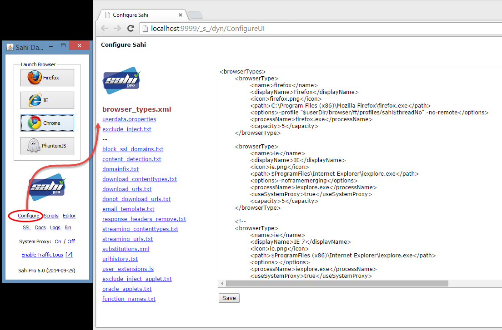 - Look for a browserType node with
<name>firefox</name> - Locate the
pathelement and change the value to what is on your machine. For example,
Change
to<path>$ProgramFiles\Mozilla Firefox\firefox.exe</path>
<path>C:\Program Files\Mozilla Firefox\firefox.exe</path> - Normally, you do not need to change any other option
- Click
Save, close the browser, restart Sahi. You should now see firefox on the Dashboard
browserType Node
<browserType>
<name>firefox</name>
<displayName>Firefox</displayName>
<icon>firefox.png</icon>
<path>$ProgramFiles\Mozilla Firefox\firefox.exe</path>
<options>-profile "$userDir/browser/ff/profiles/sahi$threadNo" -no-remote</options>
<processName>firefox.exe</processName>
<capacity>5</capacity>
<useSystemProxy>false</useSystemProxy>
<force>false</force>
</browserType>| Element | Value |
| name | Key by which this browserType will be referred. This can be any value without spaces. |
| displayName | Text displayed on the Dashboard |
| icon | Icon to be displayed. These are bundled inside Sahi |
| path | Path to the browser executable. If you run this from a command line, it should invoke the browser |
| options | Browser startup options. Sahi launches browsers with some preconfigured settings like proxy, cookie isolation, SSL etc. using the options. There are specific settings for different browsers and should not be modified by the user. Internet Explorer 8+ Internet Explorer 6,7 options tag needed but is blank Firefox Google Chrome Safari options tag needed but is blank Opera options tag needed but is blank PhantomJS |
| processName | Process name for looking up PID of process. Sahi will do a tasklist or ps with this name to identify the process to kill |
| capacity | Maximum number of browsers simultaneously executable without overwhelming the system. This depends on your system and you can configure this based on your judgement |
| useSystemProxy | true/false. Specifies if Windows system proxy settings should be changed to use Sahi Proxy. Needed by Internet Explorer and Safari on Windows |
| force | true/false. Sahi checks to see that the path attribute above is correct and available on the system.On some Operating Systems the path is not really a file path but a command to invoke the browser. Use force=true in those cases |
Variables used in browser_types.xml
| $userDir | Path to Sahi's userdata directory |
| $threadNo | Do not modify. Sahi dynamically substitutes this value during playback. |
| $XXX | Sahi looks for a System environment property of name XXX and replaces its value. For example, $ProgramFiles will be replaced with C:\Program Files on Windows |
Other browser modifications needed
infoTo work with pop-up windows, make sure that browser pop-up blockers are disabled
Internet Explorer 11
- Disable "Enable Protected Mode"
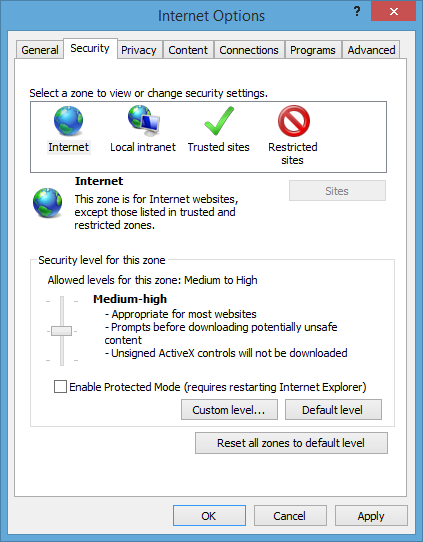
Internet Explorer 10
If you see error as below, while running scripts on Internet Explorer 10
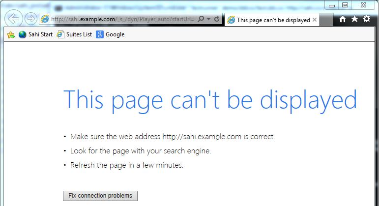Please please make following chnages
- Click on the
Configurelink on the Dashboard. It will open up Sahi's configuration page. - Click on the
userdata.propertieslink on the left panel. It will open up Sahi's userdata properties on right panel. - Write below code at end of userdata properties.
1000 is the time delay in miliseconds. You can increse this delay if problem still persists.browser_launch.delay_after_proxy_change=1000
- Click
Save - Restart Sahi.
Opera
Opera needs to be configured slightly so that crash-recovery and splash screens are disabled.On Opera 18.0
- On Opera, type opera:config in the url bar to edit configuration.
selectOpen a specific page or set of pagesand Set pages should be blank.
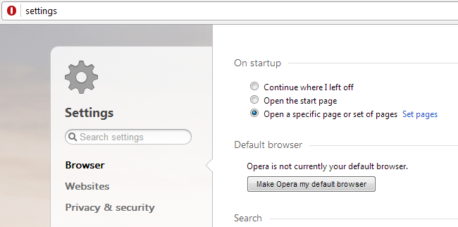
On older versions of Opera
On Opera, type opera:config in the url bar to edit configuration.
Modify the configuration:
set Recovery Strategy = 0
and
Uncheck Show Problem Dialog
Safari
You can only run Safari in one thread if you want it to be killed properly.Also make sure no other Safari instances are running before you invoke this.
Other wise new pages may open in tabs.
Configure SSL
Sahi acts as a proxy between the browser and website. For SSL sites, this means that Sahi behaves like a man in the middle.To make Sahi work properly on SSL sites, a particular Sahi root certificate needs to be accepted.
Sahi allows various methods to accept the root certificate
- Click on the
SSLlink on Sahi's Dashboard.
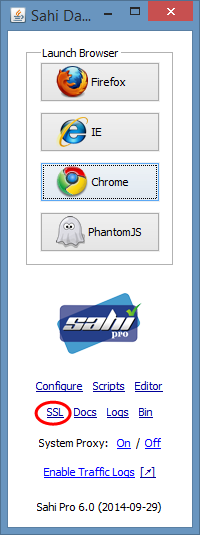 Sahi will try to use certutil on Windows to add the root certificate. This will work if you have the correct privileges.
If it succeeds you will see something like this on your Sahi console.
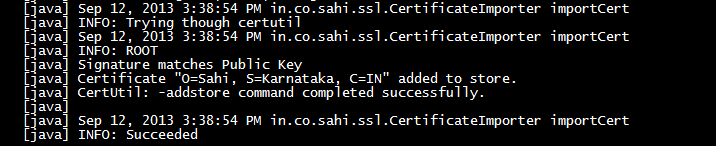 -
If step 1 does not succeed automatically, a security window will be opened.
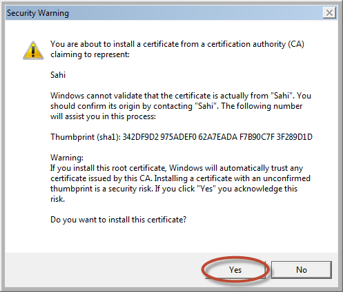 Click Yes to accept the certificate.
-
If step 2 does not work either, then a different screen would popup. Follow these steps.
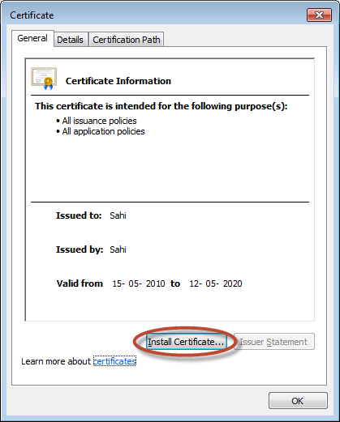 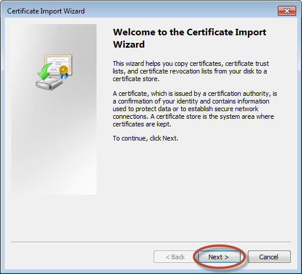 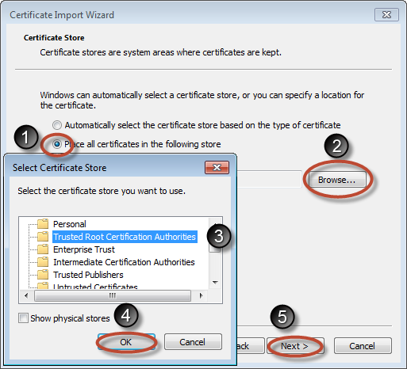 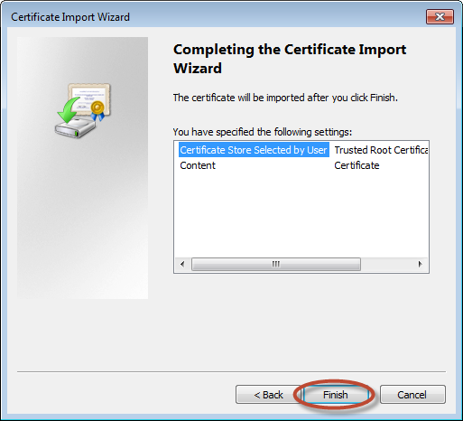 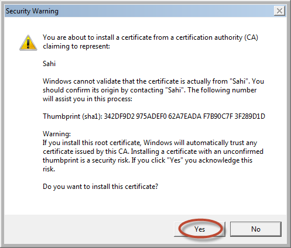 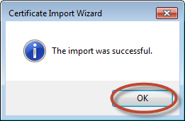
Enabling weaker algorithms on Java 1.7 and later
symptom
When connecting to a specific https site, any browser opened from the Sahi Dashboard fails to connect,
with an error message
with an error message
Received fatal alert: handshake_failure. Sahi can not connect to the desired URL.resolution
Please check if you are able to connect to https://www.google.com via Sahi.
If you could access https://www.google.com, but not your other sites,
it is possible that these servers have certificates with a weaker algorithm. To fix it, do the following:
If you could access https://www.google.com, but not your other sites,
it is possible that these servers have certificates with a weaker algorithm. To fix it, do the following:
-
See what your java path is from the Controller->Info tab. You should see something like this:
Java Installed Directory: D:\Dev\Programs\jdk7\jre -
Open
<jre_dir>/lib/security/java.securityfile in a text editor. (In our case, it is D:\Dev\Programs\jdk7\jre\lib\security\java.security)
-
Look for
jdk.certpath.disabledAlgorithms.
In our case, it looks like:
jdk.certpath.disabledAlgorithms=MD2 -
Comment it out, so that it looks like this:
#jdk.certpath.disabledAlgorithms=MD2 -
Restart Sahi, and check again.
For Linux
-
Sahi should already be running before you run the following command.
-
Open a Terminal and navigate to
<SAHI_INSTALLED_DIRECTORY>/userdata/bin. Run the following command at the prompt.
./add_ssl_root_cert_linux.sh
For Mac
-
Sahi should already be running before you run the following command.
-
Open a Terminal and navigate to
<SAHI_INSTALLED_DIRECTORY>/userdata/bin. Run the following command at the prompt.
./add_ssl_root_cert_mac.sh
External Proxy
If you normally need a proxy to access websites, you will have to tell Sahi to use that proxy.You configure the external proxy by editing
/userdata/config/userdata.properties Proxy AutoConfig Script
If you normally use a proxy pac file, you need to tell Sahi to use it.To check, go to Internet Explorer -> Tools -> Internet Options -> Connection -> LAN Settings
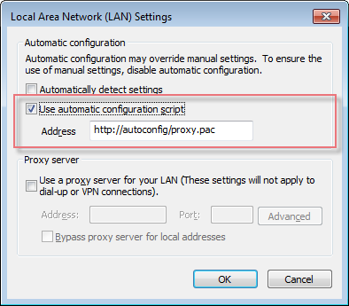 The value in Address is what we want.
Open userdata.properties and add
# Replace http://autoconfig/proxy.pac with your relevant proxy URL
ext.http.proxy.pac.url=http://autoconfig/proxy.pacIf the Address looks like
file://C:/proxy.pacext.http.proxy.pac.url=C:/proxy.pacinfoIf directly specifying the proxy.pac URL does not work,
- Open a browser without Sahi. Navigate to the proxy.pac URL, download and save it on the filesystem, say as C:/proxy.pac
- Use
ext.http.proxy.pac.url=C:/proxy.pac
Fixed Proxy
Check if you normally use a fixed proxy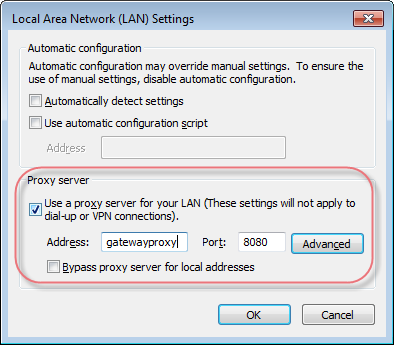 If yes, modify userdata.properties like this:
ext.http.proxy.enable=true
ext.http.proxy.host=external_proxy_server_hostname_or_ip
ext.http.proxy.port=external_proxy_server_portext.http.proxy.auth.enable=true
ext.http.proxy.auth.name=proxy_authorization_username
ext.http.proxy.auth.password=proxy_authorization_passwordIn addition, if you need to bypass the external proxy for some local sites you need to configure that too in sahi.properties like this
ext.http.both.proxy.bypass_hosts=localhost|127.0.0.1|*.yourinternaldomain.comConfiguring Proxy on Mac
Sahi automatically configures the proxy on Mac before launching a browser.
Sahi assumes that your default networkserviceorder is
Wi-FiIf it is something else, eg.
AirPort, you need to addmac.networkserviceorder="AirPort"userdata.properties.Restart Sahi and check.
Depending on your Mac version, you may see a prompt to enter username/password like this:
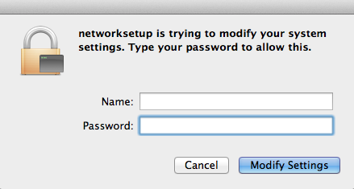 You need to disable this prompt using one of the ways specified at this link:
osx - Prevent networksetup from asking password - Stack Overflow